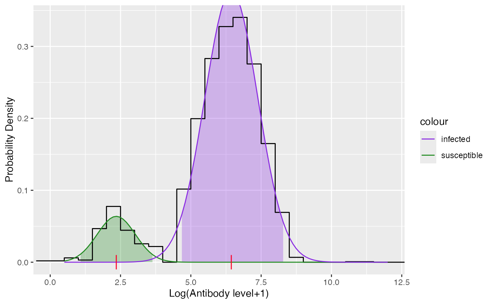
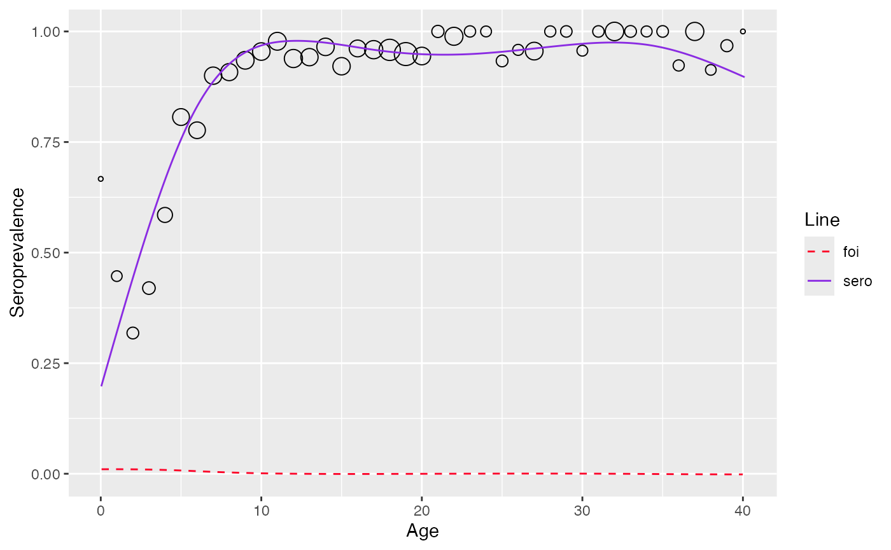

Modeling directly from antibody levels
Source:vignettes/model_quantitative_data.Rmd
model_quantitative_data.RmdMixture model
Proposed model
Two-component mixture model for test result \(Z\) with \(Z_j (j = \{I, S\})\) being the latent mixing component having density \(f_j(z_j|\theta_j)\) and with \(\pi_{\text{TRUE}}(a)\) being the age-dependent mixing probability can be represented as
\[ f(z|z_I, z_S,a) = (1-\pi_{\text{TRUE}}(a))f_S(z_S|\theta_S)+\pi_{\text{TRUE}}(a)f_I(z_I|\theta_I) \]
The mean \(E(Z|a)\) thus equals
\[ \mu(a) = (1-\pi_{\text{TRUE}}(a))\mu_S+\pi_{\text{TRUE}}(a)\mu_I\]
From which the true prevalence can be calculated by
\[ \pi_{\text{TRUE}}(a) = \frac{\mu(a) - \mu_S}{\mu_I - \mu_S} \]
Force of infection can then be calculated by
\[ \lambda_{TRUE} = \frac{\mu'(a)}{\mu_I - \mu(a)} \]
Fitting data
To fit the mixture data, use mixture_model function
df <- vzv_be_2001_2003[vzv_be_2001_2003$age < 40.5,]
df <- df[order(df$age),]
data <- df$VZVmIUml
model <- mixture_model(antibody_level = data)
model$info
#>
#> Parameters:
#> pi mu sigma
#> 1 0.1088 2.349 0.6804
#> 2 0.8912 6.439 0.9437
#>
#> Distribution:
#> [1] "norm"
#>
#> Constraints:
#> conpi conmu consigma
#> "NONE" "NONE" "NONE"
plot(model)
sero-prevalence and FOI can then be esimated using function
estimate_from_mixture
est_mixture <- estimate_from_mixture(df$age, data, mixture_model = model, threshold_status = df$seropositive, sp=83, monotonize = FALSE)
plot(est_mixture)
#> Warning: No shared levels found between `names(values)` of the manual scale and the
#> data's fill values.